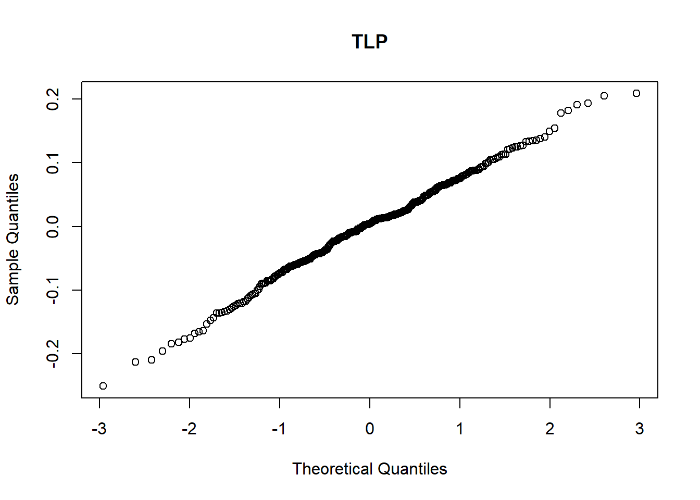
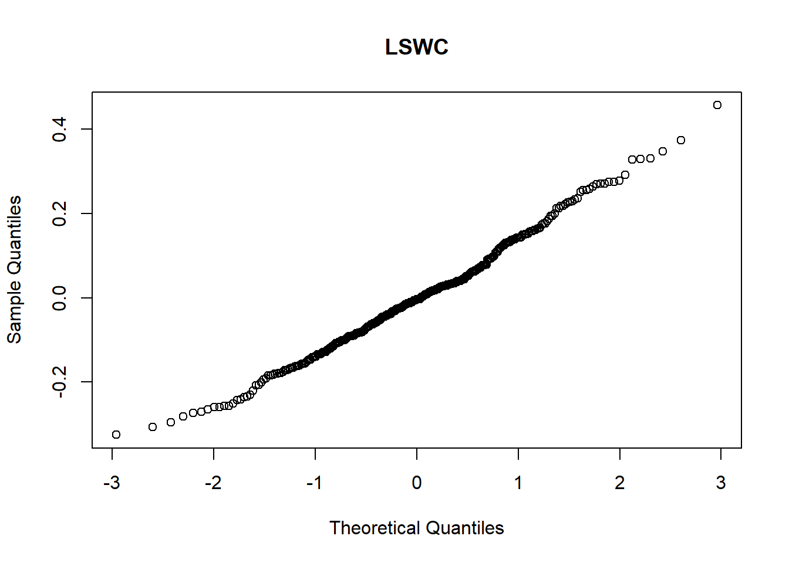
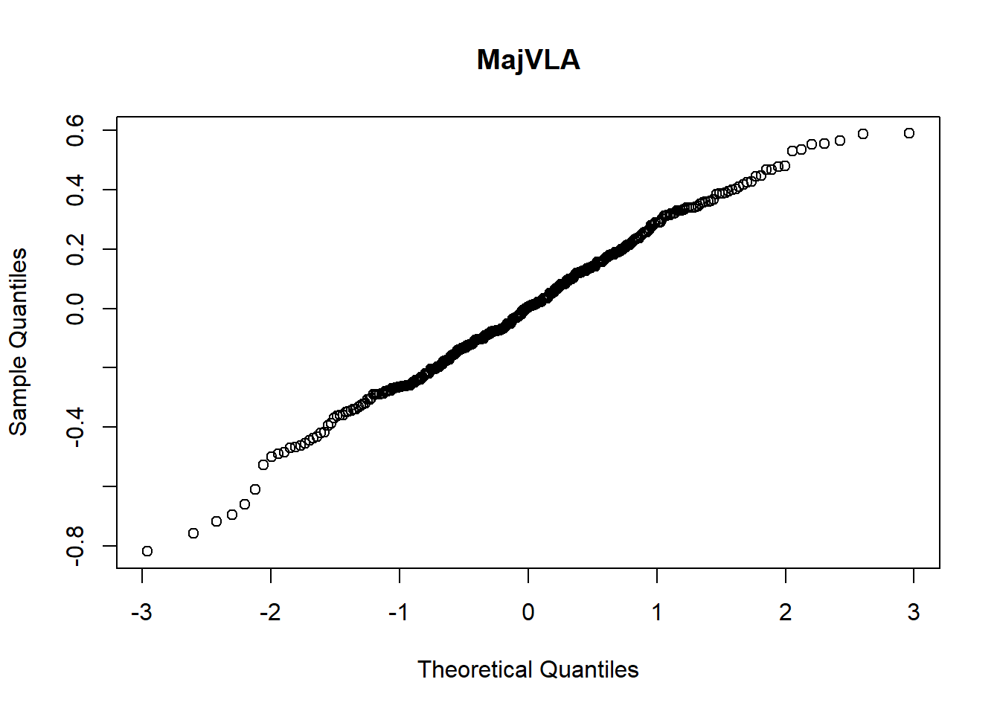
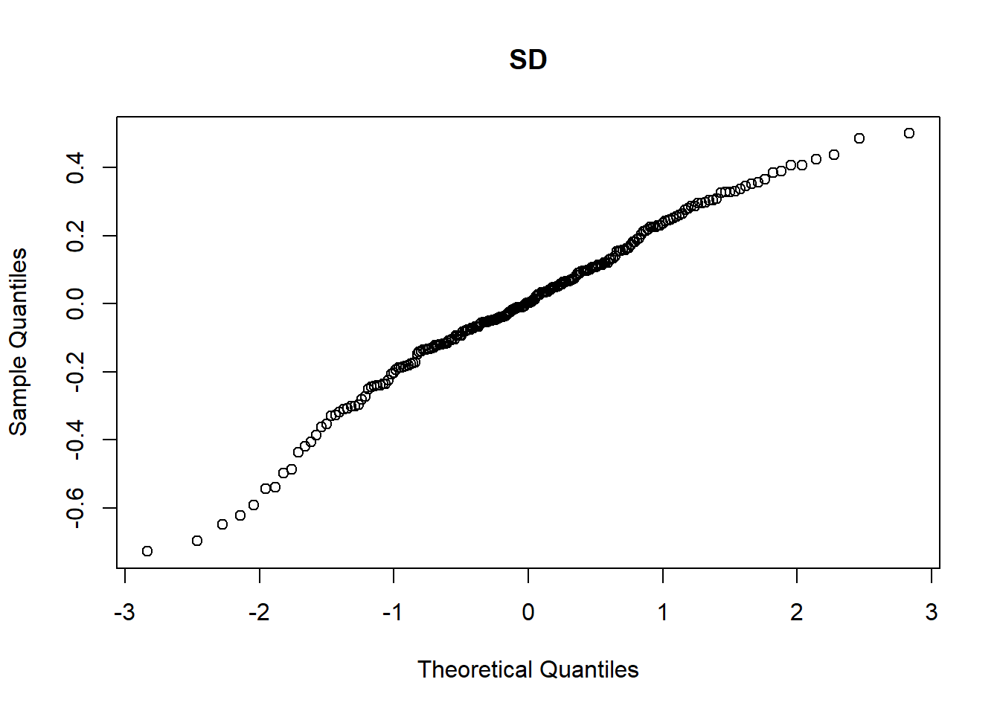
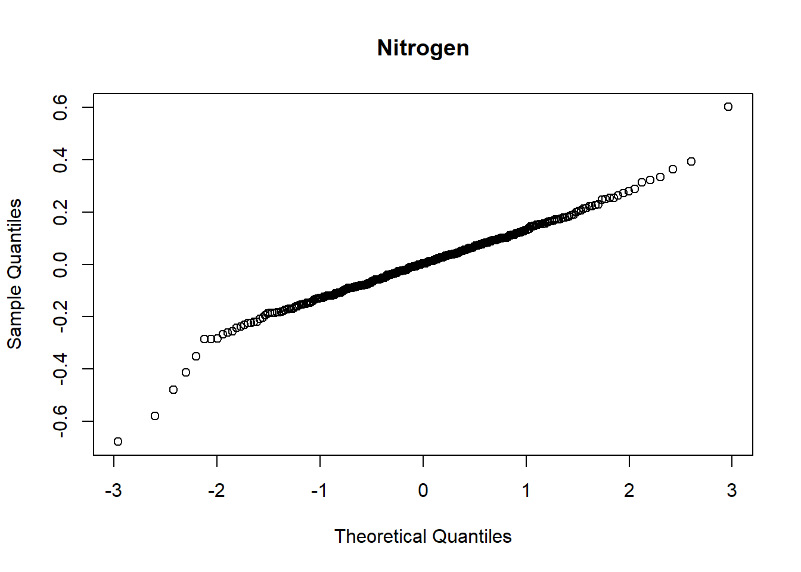

Part four : Results
The importance of local habitat in shaping functional tropical tree species’ strategies.
Authors : Marion Boisseaux, Daniela Krebber, Christopher Baraloto, Benoit Burban, Angela Casado-Garcia, Jocelyn Cazal, Jeanne Clément, Géraldine Derroire, Claire Fortunel, Jean-Yves Goret, Jonathan Heras, Gaelle Jaouen, Isabelle Maréchaux, Christine Scoffoni, Ghislain Vieilledent, Jason Vleminckx, Sabrina Coste, Heidy Schimann, Clément Stahl.
4.13 Contribution of the environment to single-trait variation
## Loading required package: Matrix##
## Attaching package: 'lme4'## The following object is masked from 'package:nlme':
##
## lmList##
## Attaching package: 'dplyr'## The following object is masked from 'package:nlme':
##
## collapse## The following objects are masked from 'package:stats':
##
## filter, lag## The following objects are masked from 'package:base':
##
## intersect, setdiff, setequal, union## Warning: package 'ggplot2' was built under R version 4.2.2## Warning: package 'kableExtra' was built under R version 4.2.2##
## Attaching package: 'kableExtra'## The following object is masked from 'package:dplyr':
##
## group_rows## Traits Levels Variances
## 1 Gmin Environment 12
## 2 Gmin Species 42
## 3 Gmin Individual 46
## 4 TLP Environment 6
## 5 TLP Species 54
## 6 TLP Individual 40
## 7 LSWC Environment 3
## 8 LSWC Species 54
## 9 LSWC Individual 43
## 10 MajVLA Environment 6
## 11 MajVLA Species 56
## 12 MajVLA Individual 38
## 13 SD Environment 6
## 14 SD Species 76
## 15 SD Individual 18
## 16 Nitrogen Environment 9
## 17 Nitrogen Species 61
## 18 Nitrogen Individual 30
## 19 Carbon Environment -1
## 20 Carbon Species 35
## 21 Carbon Individual 66
## 22 Phosphorous Environment 0
## 23 Phosphorous Species 54
## 24 Phosphorous Individual 46
## 25 Potassium Environment 8
## 26 Potassium Species 36
## 27 Potassium Individual 56








The variance partitioning showed that single-trait values are largely determined by the species identity, i.e. interspecific variability and the individual level, i.e. intraspecific variability (Figure 1). The species explained between 35% (Potassium) and 69% (SD) of the variation. The residual variance corresponding to the intraspecific variation explained between 25% (SD) and 58% (Potassium). Intraspecific variation was higher than interspecific variation for gmin, carbon, potassium, and phosphorous leaf concentration. The environment explained very little of the variation: it was highest for gmin (11%) and potassium leaf concentration (7%) but even null for carbon leaf concentration. The model summary for each trait is shown in Table S6.
4.14 Traits covariation
## Loading required package: usethis## Warning: Using `size` aesthetic for lines was deprecated in ggplot2 3.4.0.
## ℹ Please use `linewidth` instead.## Warning: Duplicated `override.aes` is ignored.Almost fifty percent of the variance in leaf trait values was explained by the first two axes of the PCA (Figure 2). All leaf chemical traits highly contributed to both axes, explaining most of the total trait variation. For the first axis, leaf chemical traits (phosphorus, nitrogen and potassium) and LSWC, respectively contributed up to 29 %, 20 %, 16 % and 17 % (Figure S5). For the second axis, leaf chemical traits (carbon, potassium) and TLP, respectively contributed up to 34 %, 27 % and 27 % (Figure S5). Interestingly, MajVLA and gmin were not well represented by the first two dimensions but contributed to the third dimension, respectively 49 % and 46 % (Figure S5). The third axis explained 13.5 % of the variation, but did not segregate species preferences nor habitats of collect (Figure S6). The permutational manova on species’ preferences revealed significant groups (Table S4A). We observe larger F-values for the pairwise post-hoc analyses between the SF specialists and generalists, indicating a more pronounced group separation than between TF specialist and generalists. The permutational manova on the habitat of collect, where the individual tree was sampled, revealed significant differences between the two habitats (Table S4B).
4.15 Leaf trait syndrome variation along the TWI gradient
###########################################
library(ggpubr)
#read previously saved file for the generalist
data <- read.csv("./Results/TI/data_generalist.csv")
#plot generalists
title <- "Generalist"
# Create a text grob
tgrob <- ggpubr::text_grob(title,size = 16)
# Draw the text
plot_0 <- as_ggplot(tgrob) + theme(plot.margin = margin(0,3,0,0, "cm"))
#Plot TI (ranges standardized by effect size) along TWI
A <- ggplot(data) +
aes(x = mean, y = ITI) +
geom_point(shape = "circle", size = 5, color = "#009E72") +
geom_hline(yintercept = 0, col = "gray", linetype = "dashed") +
ylab(expression(atop("Trait integration index", italic("range")))) + #atop creates a line break
xlab("Topographic wetness index") +
theme(axis.text = element_text(size = 12),
axis.title.y = element_text(size = 12),
axis.title.x = element_text(size = 12)) +
theme_minimal(base_size = 12) +
guides(color = "none") #remove legend
#Plot TI_sd along TWI
B <- ggplot(data) +
aes(x = mean, y = ITI_sd) +
geom_point(shape = "circle", size = 5, color = "#009E72") +
geom_hline(yintercept = 0, col = "gray", linetype = "dashed") +
ylab(expression(atop("Trait integration index", italic("standard deviation")))) +
xlab("Topographic wetness index") +
theme(axis.text = element_text(size = 12),
axis.title.y = element_text(size = 12),
axis.title.x = element_text(size = 12)) +
theme_minimal(base_size = 12)+
guides(color = "none")library(ggpubr)
#read previously saved file for specialists
data_s <- read.csv("./Results/TI/data_specialist.csv")
#plot specialist
title_s <- "Specialist"
# Create a text grob
tgrob_s <- ggpubr::text_grob(title_s,size = 16)
# Draw the text
plot_s <- as_ggplot(tgrob_s) + theme(plot.margin = margin(0,3,0,0, "cm"))
#Plot TI (ranges standardized by effect size) along TWI
C <- ggplot(data_s) +
aes(x = mean, y = ITI) +
geom_point(shape = "circle", size = 5, aes(color = mean)) +
scale_color_gradient(low = "#E79F02", high = "#56B4E9") +
geom_hline(yintercept = 0, col = "gray", linetype = "dashed") +
ylab(expression(atop("Trait integration index", italic("range")))) + #atop creates a line break
xlab("Topographic wetness index") +
theme(axis.text = element_text(size = 12),
axis.title.y = element_text(size = 12),
axis.title.x = element_text(size = 12)) +
theme_minimal(base_size = 12) +
guides(color = "none") #remove legend
#Plot TI_sd along TWI
D <- ggplot(data_s) +
aes(x = mean, y = ITI_sd) +
geom_point(shape = "circle", size = 5, aes(color = mean)) +
scale_color_gradient(low = "#E79F02", high = "#56B4E9") +
geom_hline(yintercept = 0, col = "gray", linetype = "dashed") +
ylab(expression(atop("Trait integration index", italic("standard deviation")))) +
xlab("Topographic wetness index") +
theme(axis.text = element_text(size = 12),
axis.title.y = element_text(size = 12),
axis.title.x = element_text(size = 12)) +
theme_minimal(base_size = 12)+
guides(color = "none")


Both multivariate indices (the range and standard deviation) show a strong increase towards the end of the TWI gradient, seasonally flooded soils (Figure 4). For generalist species, we observe a higher degree of trait association in both extreme ends of the TWI gradient (Figure 4A, 4B). For specialist species, trait integration is highest for individuals sampled in seasonally flooded soils (i.e. SF specialists) than for individuals sampled in terra firme soils (i.e. TF specialists) (Figure 4C, 4D). Seasonally flooded habitats act as a stronger environmental constraint than terra firme habitats on leaf trait syndromes linked to nutrient and water resources.
4.16 Intraspecific trait variability
(H3) Generalist species express a higher intraspecific trait variability than specialist species.
CV to quantify ITV : absolute variation of the intraspecific trait with respect to the interspecific mean.
CV is defined as the ratio of the standard deviation to the mean , expressed as a percentage. CV is convenient to compare variation of traits among species as it requires no ad hoc assumptions and is unitless.
## CV
cv_eff <- function(traits){
if(any(is.na(traits)))
traits=traits[!is.na(traits)]
N=length(traits)
y_bar=mean(traits)
s2_hat=var(traits)
cv_2=s2_hat/y_bar^2
cv_1=sqrt(cv_2)
gamma_1=sum(((traits-y_bar)/s2_hat^0.5)^3)/N
gamma_2=sum(((traits-y_bar)/s2_hat^0.5)^4)/N
bias=cv_2^(3/2)/N*(3*cv_2^0.5-2*gamma_1)
bias2=cv_1^3/N-cv_1/4/N-cv_1^2*gamma_1/2/N-cv_1*gamma_2/8/N
cv1=sd(traits)/mean(traits)
cv4=cv_1-bias2
re=cv4
return(list(cv= re, eff = N))
}
cv <- function(traits){
if(any(is.na(traits)))
traits=traits[!is.na(traits)]
N=length(traits)
y_bar=mean(traits)
s2_hat=var(traits)
cv_2=s2_hat/y_bar^2
cv_1=sqrt(cv_2)
gamma_1=sum(((traits-y_bar)/s2_hat^0.5)^3)/N
gamma_2=sum(((traits-y_bar)/s2_hat^0.5)^4)/N
bias=cv_2^(3/2)/N*(3*cv_2^0.5-2*gamma_1)
bias2=cv_1^3/N-cv_1/4/N-cv_1^2*gamma_1/2/N-cv_1*gamma_2/8/N
cv1=sd(traits)/mean(traits)
cv4=cv_1-bias2
re=cv4
return(re)
}
#data ----------
Metradica <- read.csv("C:/Users/marion.boisseaux/Dropbox/Mon PC (Jaboty20)/Documents/METRADICA/METRADICAproject/Dataset/OUTPUT_cleaning/Subset_imputed/Subset_imputation_exceptSD.csv")
Metradica$Type <- as.character(Metradica$Type)
Metradica$Name <- as.character(Metradica$Name)
# For generalists ----------
cv_G <- Metradica %>% filter(Type =="Generalist") %>%
rename(Carbon = C,
Nitrogen = N,
Potassium = K,
Phosphorous = P) %>%
mutate_at(c("Gmin","TLP", "LSWC", "MajVLA", "SD", "Carbon", "Nitrogen", "Phosphorous", "Potassium"), abs) %>%
mutate_at(c("Gmin","TLP", "LSWC", "MajVLA", "SD", "Carbon", "Nitrogen", "Phosphorous", "Potassium"), log) %>%
mutate(TLP = -TLP) %>%
group_by(Name) %>%
summarise_at(c("Gmin","TLP", "LSWC", "MajVLA", "SD", "Carbon", "Nitrogen", "Phosphorous", "Potassium"), funs(cv))## Warning: `funs()` was deprecated in dplyr 0.8.0.
## ℹ Please use a list of either functions or lambdas:
##
## # Simple named list: list(mean = mean, median = median)
##
## # Auto named with `tibble::lst()`: tibble::lst(mean, median)
##
## # Using lambdas list(~ mean(., trim = .2), ~ median(., na.rm = TRUE))cv_G <- bind_rows(cv_G,
ungroup(cv_G) %>%
summarise_all(mean) %>%
mutate(Name = "mean"))## Warning in mean.default(Name): argument is not numeric or logical: returning NAcv_long_G <- reshape2::melt(cv_G, "Name", variable.name = "trait", value.name = "CV")
cv_long_G$Type <- c("Generalist")
# For TF specialist -------------
cv_TF <- Metradica %>% filter(Type =="TF") %>%
rename(Carbon = C,
Nitrogen = N,
Potassium = K,
Phosphorous = P) %>%
mutate_at(c("Gmin","TLP", "LSWC", "MajVLA", "SD", "Carbon", "Nitrogen", "Phosphorous", "Potassium"), abs) %>%
mutate_at(c("Gmin","TLP", "LSWC", "MajVLA", "SD", "Carbon", "Nitrogen", "Phosphorous", "Potassium"), log) %>%
mutate(TLP = -TLP)%>%
group_by(Name) %>%
summarise_at(c("Gmin","TLP", "LSWC", "MajVLA", "SD", "Carbon", "Nitrogen", "Phosphorous", "Potassium"), funs(cv))
cv_TF <- bind_rows(cv_TF,
ungroup(cv_TF) %>%
summarise_all(mean) %>%
mutate(Name = "mean"))## Warning in mean.default(Name): argument is not numeric or logical: returning NAcv_TF$SD[7] <- (cv_TF$SD[1]+cv_TF$SD[2]+cv_TF$SD[3]+cv_TF$SD[5]+cv_TF$SD[6])/5
cv_long_TF <- reshape2::melt(cv_TF, "Name", variable.name = "trait", value.name = "CV")
cv_long_TF$Type <- c("TF")
# For BF specialist-----------
cv_BF <- Metradica %>% filter(Type =="BF") %>%
rename(Carbon = C,
Nitrogen = N,
Potassium = K,
Phosphorous = P) %>%
mutate_at(c("Gmin","TLP", "LSWC", "MajVLA", "SD", "Carbon", "Nitrogen", "Phosphorous", "Potassium"), abs) %>%
mutate_at(c("Gmin","TLP", "LSWC", "MajVLA", "SD", "Carbon", "Nitrogen", "Phosphorous", "Potassium"), log) %>%
mutate(TLP = -TLP)%>%
group_by(Name) %>%
summarise_at(c("Gmin","TLP", "LSWC", "MajVLA", "SD", "Carbon", "Nitrogen", "Phosphorous", "Potassium"), funs(cv))
cv_BF <- bind_rows(cv_BF,
ungroup(cv_BF) %>%
summarise_all(mean) %>%
mutate(Name = "mean")) ## Warning in mean.default(Name): argument is not numeric or logical: returning NAcv_BF$SD[10] <- (cv_BF$SD[2]+cv_BF$SD[3]+cv_BF$SD[4]+cv_BF$SD[5]+cv_BF$SD[6]+cv_BF$SD[7]+cv_BF$SD[8]+cv_BF$SD[9])/8
cv_long_BF <- reshape2::melt(cv_BF, "Name", variable.name = "trait", value.name = "CV")
cv_long_BF$Type <- c("BF")
cv_tot <- bind_rows(cv_long_BF, cv_long_TF, cv_long_G)
# plot all
#option 1
cv_plot <- cv_tot %>%
mutate(CV =CV*100) %>%
mutate(trait = dplyr::recode(trait, "Gmin" = "g[min]", "TLP" = "pi[tlp]")) %>%
filter(Name != "mean") %>%
ggplot(aes(x = Type, y = CV, fill = Type)) +
geom_jitter() +
geom_boxplot(alpha=0.7)+
scale_fill_manual("Species'\npreference",
values = c("#56B4E9", "#009E72", "#E79F02"),
labels = c("TF" = "TF specialist",
"Generalist" = "Generalist",
"BF" = "SF specialist")) +
scale_shape_discrete("Species'\npreference") +
theme(axis.title.x = element_blank(), axis.text.x = element_blank())+
theme(plot.title = element_text(size=14, face="bold")) +
ylab("Coefficient of variation (%)") + xlab("")+
theme_minimal(base_size = 22) +
facet_wrap(~trait, scales ="free_y") +
theme(legend.position = "bottom")
#option 2
cv_tot$Type <- dplyr::recode(cv_tot$Type, "TF" = "TF specialist", "BF" = "SF specialist")
cv_plot <- cv_tot %>%
# mutate(trait = dplyr::recode(trait, "Gmin" = "g[min]", "TLP" = "TLP", "C"= "C", "N" = "N", "K"= "K", "LSWC" = "LSWC", "MajVLA" = "MajVLA", "P" = "P", "SD" = "SD")) %>%
mutate(trait = dplyr::recode(trait,
"Gmin" = "g[min]",
"TLP" = "TLP",
"Carbon"= "Carbon",
"Nitrogen" = "Nitrogen",
"Potassium"= "Potassium",
"LSWC" = "LSWC",
"MajVLA" = "MajVLA",
"Phosphorous" = "Phosphorous",
"SD" = "SD")) %>%
mutate(CV =CV*100) %>%
filter(Name != "mean") %>%
ggplot(aes(x = Type, y = CV, color = Type)) +
#geom_point()+
geom_jitter(size = 2) +
scale_color_manual(
values = c(Generalist = "#009E72",
`SF specialist` = "#56B4E9",
`TF specialist` = "#E79F02")
) +
scale_shape_discrete("Species'\npreference") +
theme_minimal(base_size = 12) +
theme(axis.text.x = element_blank())+
theme(plot.title = element_text(size=12, face="bold")) +
facet_wrap(~trait, scales ="free_y", labeller = label_parsed) +
labs(x = "", y = "Coefficient of variation (%)", color = "Species' preference") +
theme(legend.position = "bottom")
cv_plot## Warning: Removed 2 rows containing missing values (`geom_point()`).
ggsave(filename = "CV_plot.png", plot = cv_plot, bg = "white", width = 7, height = 5, dpi = 600)## Warning: Removed 2 rows containing missing values (`geom_point()`).Leaf traits showed non-negligeable CV within species for all preferences (Figure 5). The lowest CVs are observed for leaf carbon concentration (0.9 % for SF specialists ; 1.1 % for TF specialists and 1.3 % for generalists), but also LSWC and SD. Moderate CVs are observed for TLP, MajVLA and leaf potassium concentration. The highest CV are observed for gmin, with 68% for SF specialists, and 60 % for TF specialists. Generalist species do not necessarily exhibit a higher CV compared to specialist species (Figure 5), but this was the case for leaf potassium concentration (6 generalist species), LSWC (3 generalist species), leaf nitrogen concentration (2 generalist species), P (1 generalist species).